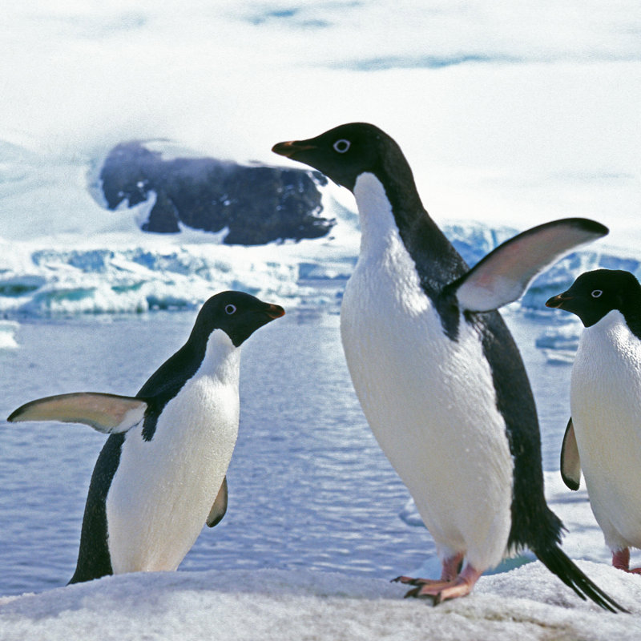

Los Pingüinos
Los pingüinos son aves marinas adaptadas a la vida en el agua y en tierra. Son conocidos por su aspecto distintivo, su forma de caminar y nadar, y su comportamiento social en las regiones frías de la Tierra.

Características de los Pingüinos
- Los pingüinos tienen plumaje negro y blanco que les proporciona camuflaje en el agua.
- Son aves no voladoras y excelentes nadadoras, con aletas en lugar de alas.
- Viven en grandes colonias en las regiones frías del hemisferio sur, como la Antártida y las islas subantárticas.
- Se alimentan principalmente de peces y krill.
Hechos Interesantes
- Los pingüinos emperadores son los más grandes y pueden sumergirse a profundidades de hasta 550 metros.
- Utilizan el deslizamiento sobre el hielo (toboganes) para moverse más rápidamente en tierra.
- Los pingüinos son aves sociales y se reúnen en colonias para protegerse del frío y depredadores.
Conservación
Algunas especies de pingüinos enfrentan amenazas, como la pérdida de hábitat, la pesca excesiva y el cambio climático. La conservación de estos animales es esencial para proteger la biodiversidad de los océanos y las regiones polares.
Los pingüinos son un grupo fascinante de aves que han capturado la imaginación de personas de todas las edades. Su forma única de vida y adaptaciones al frío extremo los hacen dignos de estudio y aprecio.